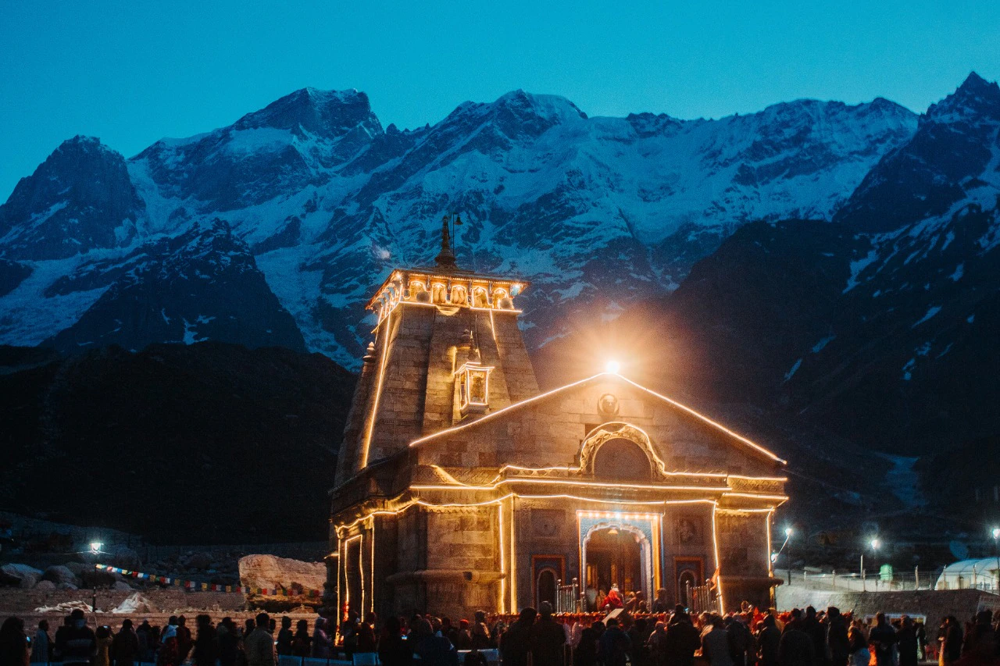

- Kedarnath temple was completely under snow for 400 years, after which this temple came to light
- The Mantras are chanted in the kannad language in Kedarnath Temple
Among the glorious mountain peaks that are covered with nothing but snowstorm, lies one of the holiest pilgrim sites of northern India -"Kedarnath". Famous for the ancient shrine devoted to Lord Shiva, it tenders an unflustered ambience with its colorful rhododendron woods, snow covered mountains and splendid sights of nature. This sacred city is visited by thousands of tourists from all over to seek the blessing of the lord and scout the undulating scenery of this region at an elevation of 11,755 ft above sea level. Almost all the appeals nestled in higher altitude render every bystander a fascinating and enchanting feeling. An amalgamation of devoutness and adventure is what makes it peerless and unique.
Summer Season (April-June) The best season to visit Kedarnath is summer when the temperature is moderate and stays between 15-30 degrees Celsius. The sun is warm and there is a gentle cool breeze that makes the day pleasant.
By Air:
The nearest domestic airport is Jolly Grant Airport in Dehradun, about 239 km from Kedarnath and operates daily flights to Delhi. Taxis are available from Dehradun airport to Kedarnath. Nearest international airport is Delhi.
By Road:
Visitors can board regular buses from Rishikesh and Kotdwar to Kedarnath. Private taxis can also be hired from these places. The National Highway from Delhi to Mana (538 km) remains open throughout the year. Kedarnath is also accessible by foot from GauriKund, which is connected by state buses to Rishikesh, Dehradun, Kotdwara and Haridwar. The bus fares vary depending on the season.
By Train:
The nearest railhead is at Rishikesh, 221 km away. Pre-paid taxi services are available at the railway station which charge about Rs 3,000. One has to travel 207 km by road and the rest 14 km on foot to reach Kedarnath.
Kedarnath Camp tent is Developed by the NIM team in Kedarnath. Meerut Mandal Mewar Sadan (Near Kedarnath Ji Temple) is a Dharamshala in Kedarnath offering peaceful accommodation services to the pilgrims. Gayatri Sadan Cottage in Kedarnath is Provides the best Facilities to the pilgrims. Also, another Good ashram in Kedarnath is Rajasthan Seva Sadan, Ashram Jay Jalaram House, Marwar House Accommodation in Kedarnath.

The Mandir is really beautiful and the surroundings too. Carry a lot of woollens if visiting during winters. Would not recommend to travel with children in extreme cold as the wind almost freezes the body.
Do register yourself for puja before going to Kedarnath ji, if you plan one.
Chopper services can too be availed.
~ Anjali
More....